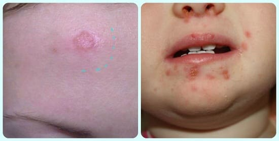

Этот вирус, также известный как губной герпес, отвечает за обычную «лихорадку на губах» у детей и взрослых. К моменту наступления периода половой зрелости 50— 80% людей заражены вирусом герпеса I типа. Он может проявляться практически в любом возрасте и обычно передается через контакт с зараженной слюной.
СИМПТОМЫ
Симптомы первичного инфицирования этим вирусом очень вариабельны. У некоторых детей проявляются лишь небольшие признаки, такие как легкая лихорадка, общая усталость, головная боль и умеренная боль в горле. У них также обычно бывают маленькие, красноватые и болезненные высыпания на губах, деснах, языке, миндалинах и на задней стенке глотки. Через несколько дней в центре красных элементов сыпи как правило, появляются белые точки. У других возможны более серьезные проявления, сопровождающие высыпаниями, описанными выше, такие как высокая лихорадка, боль при еде и сильное воспаленные горло и миндалины. Первичное инфицирование при этом типе герпеса протекает тяжелее, чем дальнейшие обострения. Взрослые, заразившиеся в более зрелом возрасте, обычно болеют легче. Это заболевание, как правило, длится около одной недели, но полное выздоровление может занять до двух недель. Поговорка «герпес — навсегда» не врет. Вирус герпеса может притаиться в тканях, обитать там всю жизнь и напомнить о себе, когда его спровоцируют. Обычно герпес повторяется на протяжении жизни. У некоторых детей и подростков он может обостряться несколько раз в год, в то время как у других намного реже.
СОВЕТ ДОКТОРОВ СИРС: НЕ ДАВАЙТЕ ГЕРПЕСУ ГУБ ПРОЯВИТЬСЯ Люди, у которых часто рецидивирует герпес губ, как правило, ощущают зуд примерно за день до появления высыпаний. Нанеся на проблемную зону антивирусную мазь при первых же признаках «того ощущения», вы можете предотвратить развитие заболевания. |
Известными провокаторами повторного появления герпеса губ являются лихорадка, стресс, беспокойство и солнечные ожоги. У людей с нарушениями иммунной системы вспышки инфекции обычно чаще и протекает тяжелее. Хорошая новость заключается в том, что повторные случае заболевания становятся легче и по мере того, как ребенок растет.

СОВЕТ ДОКТОРОВ СИРС: ОХЛАДИТЕ ГЕРПЕС! Одна из самых распространенных жалоб, которую родители слышат от детей, страдающих от герпетических высыпаний во рту, это отказ от еды, потому что им слишком больно глотать, в дополнение к вышеупомянутому лечению мы рекомендуем придерживаться в основном жидкой диеты: прохладные фруктовые коктейли или смузи. Прохладные жидкости — это естественный анестетик. Избегайте кислой или острой пищи. Прохладные коктейли и смузи, как правило, легче проглотить, чем обычную пищу или даже воду. |
ЛЕЧЕНИЕ
К сожалению, ни один из видов герпеса не лечится. Лечение герпеса губ основывается главным образом на облегчении симптомов. Методы лечения могут включать использование противовоспалительных средств анестезирующих спреев, безрецептурных средств для лечения герпеса губ. На очень болезненные участки можно наносить жидкие анестетики помогая заморозить их и облегчить симптомы. При тяжело протекаю первичном инфицировании можно использовать рецептурный препарат ацикловир.
ГЕРПЕС У НОВОРОЖДЕННЫХ
В редких случаях взрослый с воспалениями ротового герпеса может передать через слюну новорождённому ребенку вирус, который поел причиной серьезной инфекции мозге.
Здоровье ребенка от докторов Сирс / Сирс У. и др.